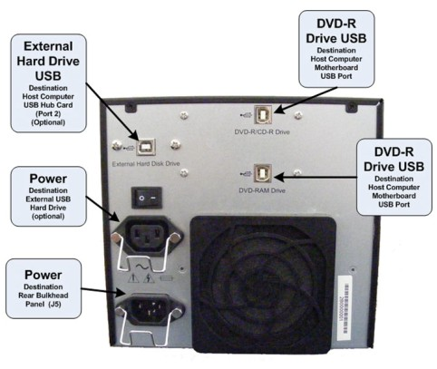

Illustration 3: DVD Peripheral Tower Connections

| NOTE: | It is important that the USB Cables be connected to their assigned ports on the Host Computer and the DVD Peripheral Drive Tower to maintain proper drive assignment. See GOC6 Console Schematic 5212920SCH |
| NOTE: |